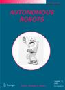

Recognized as:
Arizona State University (352-96-476)
Greater Western Library Alliance GWLA 2007 3707 (621-34-740)
658908 Greater Western Library Alliance Kluwer (merge with GWLA 2006 con acct when possible) (816-71-771)
Welcome!
To use the personalized features of this site, please log in or register.
If you have forgotten your username or password, we can help.
|
|  |
Robot-assisted wayfinding for the visually impaired in structured indoor environments
| |
|
Robot-assisted wayfinding for the visually impaired in structured indoor environments
Vladimir Kulyukin1  , Chaitanya Gharpure1 , John Nicholson1 and Grayson Osborne2 , Chaitanya Gharpure1 , John Nicholson1 and Grayson Osborne2
| (1) |
Computer Science Assistive Technology Laboratory (CSATL), Department of Computer Science, Utah State University, Logan, UT, 84322-4205 |
| (2) |
Department of Psychology, Utah State University, Logan, UT, 84322 |
Published online: 15 June 2006
Abstract We present a robot-assisted wayfinding system for the visually impaired in structured indoor environments. The system consists
of a mobile robotic guide and small passive RFID sensors embedded in the environment. The system is intended for use in indoor
environments, such as office buildings, supermarkets and airports. We describe how the system was deployed in two indoor environments
and evaluated by visually impaired participants in a series of pilot experiments. We analyze the system’s successes and failures
and outline our plans for future research and development.
Keywords Assistive robotics - Robot-assisted wayfinding - RFID-based localization - Human-robot interaction
References
| 1. |
Addlesee, M. Curwen, R., Hodges S., Newman J., Steggles P., and Ward A. 2001. Implementing a sentient computing system. IEEE Computer, August:2–8.
|
| |
| 2. |
Agre, P. 1988. The dynamic structure of everday life. Ph.D. Thesis. MIT Artificial Intelligence Laboratory.
|
| |
| 3. |
Benjamin, J. M., Ali, N. A., and Schepis, A. F. 1973. A Laser cane for the blind. In Proceedings of San Diego Medical Symposium.
|
| |
| 4. |
Bissit, D. and Heyes, A. 1980. An application of biofeedback in the rehabilitation of the blind. Applied Ergonomics 11(1):31–33.

|
| |
| 5. |
Borenstein, J. and Koren, Y. 1989. Real-time obstacle avoidance for fast mobile robots. IEEE Transactions on Systems, Man, and Cybernetics 19:1179–1187.
|
| |
| 6. |
Borenstein, J. and Ulrich, I. 1994. The guidecane—A computer. In Proceedings of the IEEE International Conference on Robotics and Automation, San Diego, CA.
|
| |
| 7. |
Burgard, W., Cremers, A., Fox, D., Hahnel, D., Lakemeyer, G., Schulz, D., Steiner, W., and Thrun, S. 1999. Experiences with
an interactive museum tour-guide robot, Artificial Intelligence, 114:3–55.
|
| |
| 8. |
Fong, T. and Thorpe, C. 2001. Vehicle teleoperation interfaces. Autonomous Robots, 11(2):9–18.
|
| |
| 9. |
Gharpure, C. 2004. Orientation Free RFID-Based Navigation in a Robotic Guide for the Visually Impaired, Masters Thesis. Department
of Computer Science, Utah State University.
|
| |
| 10. |
Horswill, I. 1993. Polly: A vision-based artificial agent. In Proceedings of the Conference of the American Association for Artificial Intelligence (AAAI-1993), Washington, DC.
|
| |
| 11. |
Kantor, G. and Singh, S. 2002. Preliminary results in range-only localization and mapping. Proceedings of the IEEE Conference on Robotics and Automation (ICRA-2002), Washington, DC.
|
| |
| 12. |
Khatib, O. 1985. Real-time obstacle avoidance for manipulators and mobile robots. In Proceedings of the IEEE International Conference on Robotics and Automation (ICRA-1985), St. Louis, Missouri.
|
| |
| 13. |
Koren, Y. and Borenstein, J. 1991. Potential field methods and their inherent limitations for mobile robot navigation. In
Proceedings of the IEEE Conference on Robotics and Automation (ICRA-1991), Sacramento, CA.
|
| |
| 14. |
Kulyukin, V. and Blair, M. 2003. Distributed tracking and guidance in indoor environments. In Proceedings of the Rehabilitation Engineering and Assistive Technology Society of North America (RESNA-2003), Atlanta, GA, avail. on CD-ROM.
|
| |
| 15. |
Kulyukin, V., Sute, P., Gharpure, C., and Pavithran, S. 2004. Perception of audio cues in robot-assisted navigation. In Proceedings of the Rehabilitation Engineering and Assistive Technology Society of North America (RESNA-2004), Orlando, FL, avail. on CD- ROM.
|
| |
| 16. |
Kulyukin, V., Gharpure, C., and De Graw, N. 2004. Human-Robot Interaction in a Robotic Guide for the Visually Impaired. In
Proceedings of the AAAI Spring Symposium on Interaction between Humans and Autonomous Systems over Extended Operation, Stanford, CA.
|
| |
| 17. |
Kulyukin, V. 2004. Human-Robot Interaction through Gesture-Free Spoken Dialogue. Autonomous Robots 16(3):239–257.
|
| |
| 18. |
Kulyukin, V., Gharpure, C., Nicholson, J., and Pavithran, S. 2004. RFID in robot-assisted indoor navigation for the visually
impaired. In Proceedings of the IEEE/RSJ International Conference on Intelligent Systems and Robots (IROS-2004), Sendai, Japan.
|
| |
| 19. |
Kulyukin, V., Gharpure, C., and Nicholson, J. 2005. RoboCart: Toward robot-assisted navigation of grocery stores by the visually
impaired. In Proceedings of the IEEE/RSJ International Conference on Intelligent Systems and Robots (IROS-2005), Edmonton, Alberta, Canada.
|
| |
| 20. |
Kupiers, B. 2000. The spatial semantic hierarchy. Artificial Intelligence 119:191–233.
|
| |
| 21. |
LaPlante, M. and Carlson, D. 2000. Disability in the United States: Prevalence and Causes. National Institute of Disability and Rehabilitation Research, U.S. Department of Education: Washington, D.C.
|
| |
| 22. |
Montemerlo, M., Pineau, J., Roy, N., Thrun, S., and Verma, V. 2002. Experiences with a mobile robotic guide for the elderly.
In Proceedings of the Conference of the American Association for Articial Intelligence (AAAI-2002), Edmonton, AB.
|
| |
| 23. |
Mori, H. and Kotani, S. 1998. Robotic travel aid for the blind: HARUNOBU-6. Second European Conference on Disability, Virtual Reality, and Assistive Technology, S⊙vde, Sweden.
|
| |
| 24. |
http://www.opencyc.org. 2003. The OpenCyc Project: Formalized Common Knowledge. Cycorp, Inc.
|
| |
| 25. |
Pfaffenberger, C., Scott, J. P., Fuller, J., Ginsburg, B. E., and Bielfelt, S. W. 1976. Guide Dogs for the Blind: Their Selection, Development, and Training. Elsevier Scientific Publishing: Amsterdam, Holland.
|
| |
| 26. |
Ross, D. 2001. Implementing assistive technology on wearable computers. IEEE Intelligent Systems May:2–8.
|
| |
| 27. |
Ross, D. and Blasch, B.B. 2002. Development of a wearable computer orientation system. IEEE Personal and Ubiquitous Computing, 6:49–63.
|
| |
| 28. |
Simmons, R. 1996. The Curvature-Velocity method for local obstacle avoidance. In Proceedings of the IEEE International Conference on Robotics and Automation (ICRA-1996), Minneapolis, USA.
|
| |
| 29. |
Shoval, S. Borenstein, J., and Koren, Y. 1994. In Mobile robot obstacle avoidance in a computerized travel for the blind.
In Proceedings of the IEEE International Conference on Robotics and Automation, San Diego, CA.
|
| |
| 30. |
Thrun, S., Bennewitz, M., Burgard, W., Cremers, A. B., Dellaert, F., Fox, D., Hahnel, D., Rosenberg, C., Roby, N., Schutle,
J., and Schultz, D. 1999. Minerva: A second generation mobile tour-guide robot. In Proceedings of the IEEE International Conference on Robotics and Automation (ICRA-1999), Antwerp, Belgium.
|
| |
| 31. |
Tinbergen, N. 1976. Animal in its World: Laboratory Experiments and General Papers. Harvard University Press.
|
| |
| 32. |
Tsukiyama, T. 2003. Navigation system for the mobile robots using RFID tags. In Proceedings of the IEEE Conference on Advanced Robotics, Coimbra, Portugal.
|
| |
| 33. |
Hahnel, D., Burgard, W., Fox, D., Fishkin, K., and Philipose, M. 2003. Mapping and Localization with RFID Technology. Intel Research Institute, Seattle, WA.
|
| |
| 34. |
Sute, P. 2004. Perception of Audio Cues in Robot-Assisted Navigation for the Visually Impaired, Masters Report. Department
of Computer Science, Utah State University.
|
| |
|
|
|
|
|
|